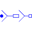

ResistorIdeal linear electrical resistors |
|
Diagram
{kind=link}
Information
This information is part of the Modelica Standard Library maintained by the Modelica Association.
Contains m resistors (Modelica.Electrical.Analog.Basic.Resistor)
Parameters (7)
| m |
Value: 3 Type: Integer Description: Number of phases |
|---|---|
| mh |
Value: m Type: Integer Description: Number of heatPorts=number of phases |
| useHeatPort |
Value: false Type: Boolean Description: = true, if all heat ports are enabled |
| T |
Value: T_ref Type: Temperature[mh] (K) Description: Fixed device temperatures if useHeatPort = false |
| R |
Value: Type: Resistance[m] (Ω) Description: Resistances R_ref at temperatures T_ref |
| T_ref |
Value: fill(300.15, m) Type: Temperature[m] (K) Description: Reference temperatures |
| alpha |
Value: zeros(m) Type: LinearTemperatureCoefficient[m] (¹/K) Description: Temperature coefficients of resistances at reference temperatures |
Connectors (3)
| plug_p |
Type: PositivePlug Description: Positive polyphase electrical plug with m pins |
|
|---|---|---|
| plug_n |
Type: NegativePlug Description: Negative polyphase electrical plug with m pins |
|
| heatPort |
Type: HeatPort_a[mh] Description: Conditional heat ports |
Components (1)
| resistor |
Type: Resistor[m] |
|---|
Used in Examples (14)
|
Modelica.Electrical.Machines.Examples.InductionMachines Test example: InductionMachineSquirrelCage Y-D |
|
|
Modelica.Electrical.Machines.Examples.InductionMachines Test example: InductionMachineSquirrelCage inverter drive |
|
|
Modelica.Electrical.Machines.Examples.SynchronousMachines PermanentMagnetSynchronousMachine braking with a resistor |
|
|
Modelica.Electrical.Machines.Examples.SynchronousMachines Test example: ElectricalExcitedSynchronousMachine with voltage controller |
|
|
Modelica.Electrical.Machines.Examples.Transformers Transformer test bench |
|
|
Modelica.Electrical.Polyphase.Examples Test example with polyphase components |
|
|
Modelica.Electrical.Polyphase.Examples Test example with polyphase components |
|
|
Modelica.Electrical.Polyphase.Examples |
|
|
ThyristorBridge2mPulse_DC_Drive Modelica.Electrical.PowerConverters.Examples.ACDC.RectifierBridge2mPulse 2*m pulse thyristor bridge feeding a DC drive |
|
|
Modelica.Electrical.PowerConverters.Examples.DCAC.PolyphaseTwoLevel Polyphase DC to AC converter with R load |
|
|
Modelica.Electrical.PowerConverters.Examples.DCAC.PolyphaseTwoLevel Polyphase DC to AC converter with R-L load |
|
|
Modelica.Magnetic.FundamentalWave.Examples.Components Comparison of equivalent circuits of eddy current loss models |
|
|
Modelica.Magnetic.FundamentalWave.Examples.Components Polyphase inductance |
|
|
Modelica.Magnetic.FundamentalWave.Examples.BasicMachines.SynchronousMachines Test example: ElectricalExcitedSynchronousMachine with voltage controller |
Used in Components (8)
|
Modelica.Electrical.Machines.BasicMachines.InductionMachines Induction machine with slipring rotor |
|
|
Modelica.Electrical.Machines.Interfaces Partial model for induction machine |
|
|
Modelica.Electrical.Machines.Interfaces Partial model of three-phase transformer |
|
|
Modelica.Electrical.Machines.Utilities Rheostat which is shortened after a given time |
|
|  |
Modelica.Electrical.Polyphase.Basic Resistance connection of star points |
|
Modelica.Magnetic.FundamentalWave.BasicMachines.Components Symmetric winding model coupling electrical and magnetic domain |
|
|
Modelica.Magnetic.FundamentalWave.BasicMachines.Components Symmetrical rotor cage |
|
|
Modelica.Magnetic.FundamentalWave.BasicMachines.Components Rotor cage with saliency in d- and q-axis |